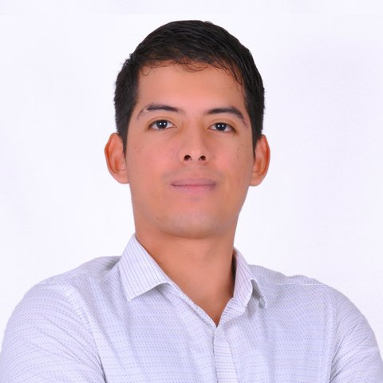

Ingeniero mecatrónico y desarrollador. Convierto procesos que viven en Excel, correo y papel en aplicaciones que la gente usa todos los días: Power Platform, Power BI, .NET, Python e IA en producción para salud, banca, farmacéutica, retail y auditoría.

11 proyectos
Me siento con quien lo usa: qué se hace hoy en Excel o correo y dónde se pierde tiempo.
Una primera versión que se puede tocar, para corregir antes de construir todo.
Las reglas de negocio se escriben y se prueban: nada de reservas cruzadas ni cifras inventadas.
Despliegue, capacitación al equipo y una segunda fase con lo que aparece en el uso real.
Cuéntame cómo se hace hoy y te digo cómo lo automatizaría. Respondo en menos de un día hábil, hora de Colombia.